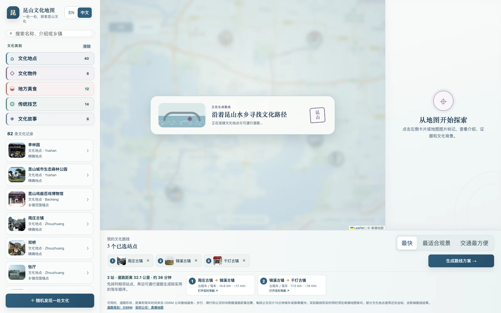
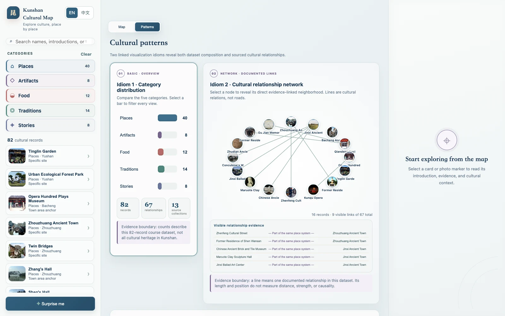

Vibe Coding / Information Visualization / HCI / 2026
Kunshan CulturalInteractive Map
Explore local culture without hiding where the information comes from.
A bilingual web experience for visitors, students, newcomers, and interested residents to discover Kunshan cultural records, inspect documented connections, and compare possible routes.

How can a map help people explore culture without presenting a student dataset as a complete account?
The project began as a simple map. Through field visits and peer review, the team saw that locations alone could not explain why a record matters or how one cultural item connects to another. The redesign added bilingual descriptions, source links, relationship evidence, and clear boundaries around approximate coordinates.
The final dataset contains 82 records, 67 documented relationships, and 13 source collections. These numbers describe the course dataset, not all cultural heritage in Kunshan. The system makes that boundary visible instead of turning coverage into a claim of completeness.
Every record can expose its source, image credit, geographic precision, and documented relationships. Route results are framed as planning aids rather than verified live navigation. The public-transport option opens AMap for a current route check.
Five connected views support one exploration task.
- 01
Explore the map
Filter bilingual records by category, search by name, and inspect where cultural sites and practices are documented.
- 02
Compare categories
See how 82 records are distributed across places, artifacts, food, traditions, and stories.
- 03
Inspect relationships
Select a node to reveal evidence-linked neighbors without implying distance, strength, or causality.
- 04
Read the evidence
Open record details to see descriptions, source collections, image credits, and location precision.
- 05
Compare routes
Save stops and compare fastest, scenic, and transit-oriented planning ideas with visible limits.

Turning cultural data into a clearer, more accountable experience.
Data and iteration
I prepared and checked the data, reviewed image and source records, and helped turn feedback into concrete revisions. The system expanded from a small prototype into 82 records with visible provenance and evidence boundaries.
UI/UX direction
I led interface iteration across the landing experience, markers, filters, relationship view, record details, and route comparison. I focused on reducing misunderstanding: a network line means a documented relationship, a coordinate may be approximate, and a route estimate is not live transit guidance.
What the project taught me
A cultural visualization becomes more useful when it helps people inspect uncertainty and provenance, not only when it makes a place look inviting.